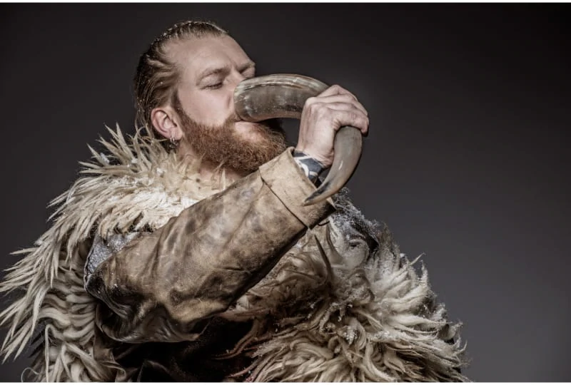

Juniper Hibiscus / Hawthorn Berry and Flower Semi-Sweet Mead
Description:
If memory serves me right, it was Olaf Haraldsson who once said:
"Too much mead and a man's heart is laid open for all to see"
As it so happens I do wish to see your heart lay open, so here goes a Semi-Sweet Mead recipe!
Ingredients:
- 1 quart (about 2.3 pounds) Wildflower honey;
- 1 gal Spring water;
- 1 oz. Dried juniper berries;
- 1 oz. Dried hibiscus flowers or 2 oz. fresh;
- 0.5 oz. Meadowsweet;
- 0.5 oz. Yarrow
- 4-5 Raisins
- ¼ - ½ cup Wild mead starter or 1 packet (5 g) of Lalvin D-47 or Lalvin 71-B
Directions:
- Mix honey with water into a stockpot over medium-low heat.
- Stir thoroughly until the honey dissolves fully.
- Using a funnel, pour the mead must into a one-gallon carboy.
- Add the juniper berries, hibiscus flowers, meadowsweet, yarrow, and raisins.
- Cover the vessel with an airlock half full of water inserted into a cork.
- Place the vessel in a warm, dark area to allow fermentation for at least one month.
- After a month, your mead will clarify but will still be too sweet and less alcoholic. To help continue its aging and achieve a more clarified mead with high alcohol content, rack the mixture into another container.
- Rack again at least two times, every two to three months, until you have a clear mead with minimal sediment on the bottom of the carboy.
- The next step is to bottle the mead. Typically, a one-gallon batch should be ready for bottling in about four to six months. For you to know if it’s time to bottle, drop a bit of sugar into the mead or stir it carefully. If it produces bubbles, then it means that the mead is still fermenting. You may also try to place a lid on the container and wait for a few days before gently opening it. If you hear any fizzing sound, the mead is still fermenting.
- Bottle the mead using wine bottles, beer bottles, or flip-top bottles with new caps. Let it age for at least six months to one year.
Back to home